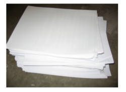
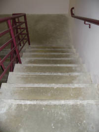
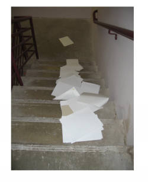
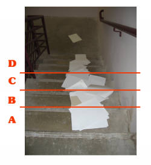
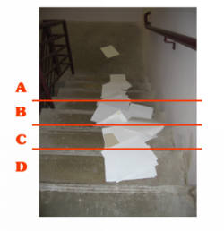
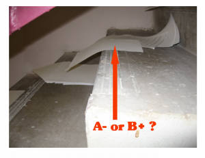
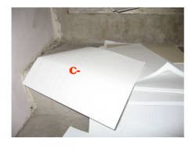
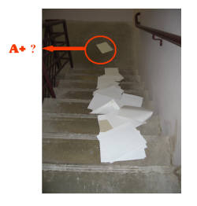

A Guide to Grading Exams
by Daniel J. Solove
Associate Professor of Law, The George Washington University Law School
Posted at ConcurringOpinions.Com on December 14, 2006
It's that time of year again. Students have taken their finals, and now it is time to grade them. It is something professors have been looking forward to all semester. Exactness in grading is a well-honed skill, taking considerable expertise and years of practice to master. The purpose of this post is to serve as a guide to young professors about how to perfect their grading skills and as a way for students to learn the mysterious science of how their grades are determined.
Grading begins with the stack of exams, shown in Figure 1 below.

The next step is to use the most precise grading method possible. There never is 100% accuracy in grading essay exams, as subjective elements can never be eradicated from the process. Numerous methods have been proposed throughout history, but there is one method that has clearly been proven superior to the others. See Figure 2 below.

The key to this method is a good toss. Without a good toss, it is difficult to get a good spread for the grading curve. It is also important to get the toss correct on the first try. Exams can get crumpled if tossed too much. They begin to look as though the professor actually read them, and this is definitely to be avoided. Additional tosses are also inefficient and expend needless time and energy. Note the toss in Figure 3 below. This is an example of a toss of considerable skill -- obviously the result of years of practice.

Note in Figure 3 above that the exams are evenly spread out, enabling application of the curve. Here, however, is where the experts diverge. Some contend that the curve ought to be applied as in Figure 4 below, with the exams at the bottom of the staircase to receive a lower grade than the ones higher up on the staircase.

According to this theory, quality is understood as a function of being toward the top, and thus the best exams clearly are to be found in this position. Others, however, propose an alternative theory (Figure 5 below).

They contend that that the exams at the bottom deserve higher grades than the ones at the top. While many professors still practice the top-higher-grade approach, the leading authorities subscribe to the bottom-higher-grade theory, despite its counterintuitive appearance. The rationale for this view is that the exams that fall lower on the staircase have more heft and have traveled farther. The greater distance traveled indicates greater knowledge of the subject matter. The bottom higher-grade approach is clearly the most logical and best-justified approach.
Even with the grade curve lines established, grading is far from completed. Several exams teeter between levels. The key is to measure the extent of what is referred to as "exam protrusion." Exams that have small portions extending below the grade line should receive a minus; exams with protrusions above the grade lines receive a plus.
But what about exams that are right in the middle of a line. In Figure 6 below, this exam teeters between the A and B line. Should it receive and A- or a B+?

This is a difficult question, but I believe it is clearly an A-. The exam is already bending toward the next stair, and in the bottom-higher-grade approach, it is leaning toward the A-. Therefore, this student deserves the A- since momentum is clearly in that direction.
Finally, there are some finer points about grading that only true masters have understood. Consider the exam in Figure 7 below. Although it appears on the C stair and seems to be protruding onto the B stair, at first glance, one would think it should receive a grade of C+. But not so. A careful examination reveals that the exam is crumpled. Clearly this is an indication of a sloppy exam performance, and the grade must reflect this fact. The appropriate grade is C-.

One final example, consider in Figure 8 below the circled exam that is is very far away from the others at the bottom of the staircase. Is this an A+?

Novices would think so, as the exam has separated itself a considerable distance from the rest of the pack. However, the correct grade for this exam is a B. The exam has traveled too far away from the pack, and will lead to extra effort on the part of the grader to retrieve the exam. Therefore, the exam must be penalized for this obvious flaw.
As you can see, grading takes considerable time and effort. But students can be assured that modern grading techniques will produce the most precise and accurate grading possible, assuming professors have achieved mastery of the necessary grading skills.
DISCLAIMER FOR THE GULLIBLE: This post is a joke. I do not grade like this. Instead, I use an even more advanced method -- an eBay grade auctioning system.